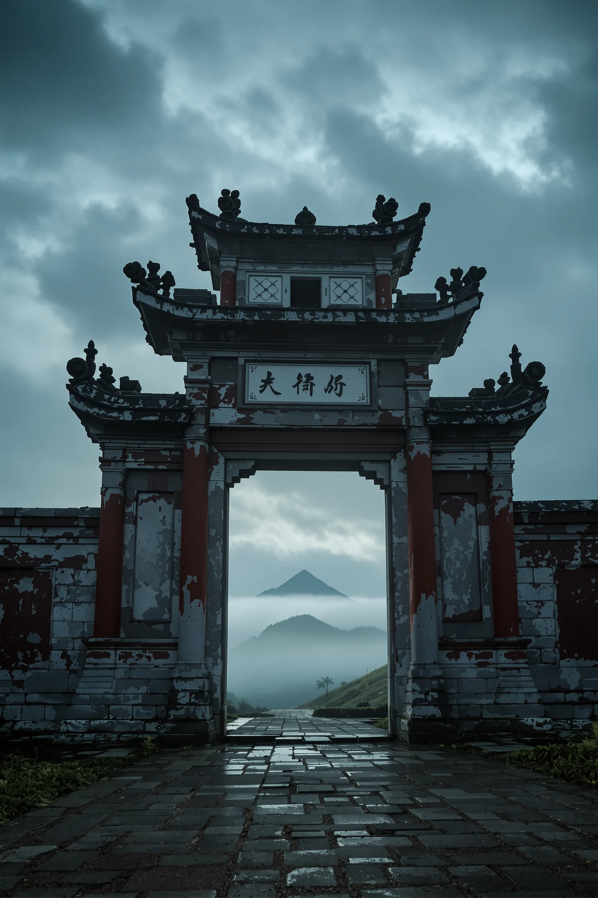
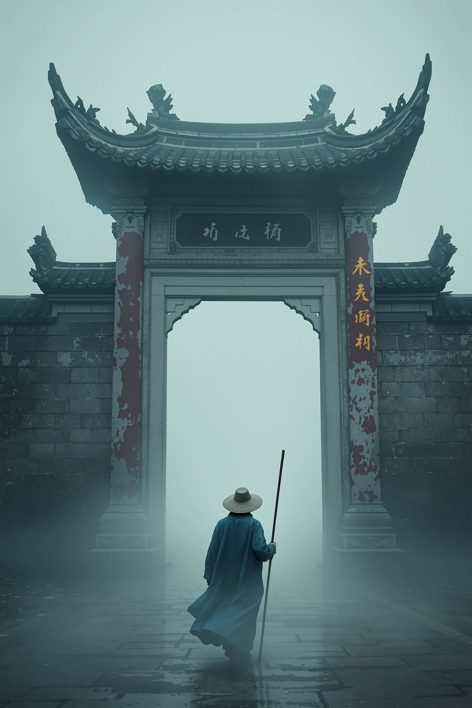
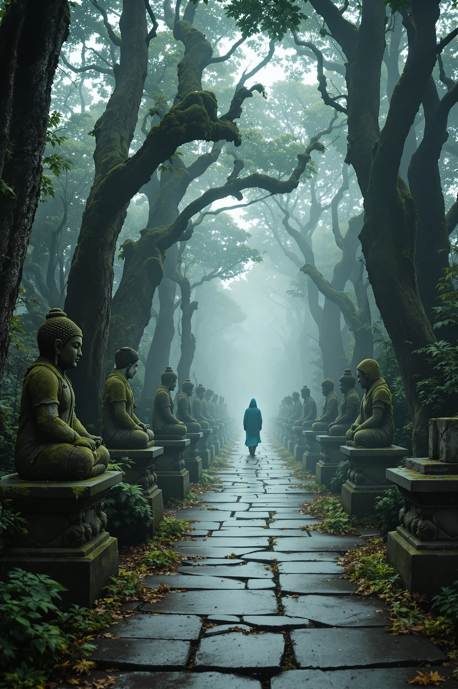

The final mockup
KF5 regenerated as background, GPT Image 1 logotype on transparent background, composited in Figma Weave. The ornamental flourish below the logo was unprompted, a model bonus.

BÓNG VESPERA · ad cover
A self-directed experiment in matching AI tools to creative stages. One fictional RPG ad campaign, four models, six hours, $0. The test: what does it look like when AI is treated as orchestration, not tool?
Most AI-creative demos use AI as a single tool. I wanted to test AI as orchestration.
Every stage (concept, atmospheric stills, typography, motion) goes to a different model based on what it is genuinely best at: Claude, Flux Pro 1.1 Ultra, GPT Image 1, Seedance 2.0. No model does everything; the work is in matching them. The campaign is fictional on purpose, so what it shows is the orchestration logic underneath, and what shippable output looks like under credit constraint.
Decision under constraint matters more than picking the best concept. C won because single subject plus atmospheric scenes maximize per-credit yield on Flux, and the mood is recruiter-distinctive (most VN game ads default to power fantasy).
Each stage hands its artifact to the next. No single model handles two stages; model selection is by what each is genuinely best at.



KF5 regenerated as background, GPT Image 1 logotype on transparent background, composited in Figma Weave. The ornamental flourish below the logo was unprompted, a model bonus.
Both included to show the boundary between free-tier and production capability. The contrast is the lesson. Hiding the failure would have been easier; showing it with the diagnosis is what separates a portfolio piece from a brochure.
There is no best AI. There is only the right model for each stage of the work.
| Stage | Best tool | Why this model, here |
|---|---|---|
| Atmospheric keyframes | Flux Pro 1.1 Ultra | Cinematic depth, painterly finish, layered fog, single-subject composition. |
| Vietnamese typography | GPT Image 1 | Accurate diacritic rendering (BÓNG, SƯƠNG, KHÔNG) and transparent-background support. |
| Concept expansion | Claude Opus 4.7 | Production-prompt construction from a short brief, structured output, reference inference. |
| Single-frame motion | Seedance 2.0 | 1080p cinematic transition between coherent frame pairs, smooth dolly. |
| Multi-image narrative | Pair-wise + manual | Multiframes free tier fails at chained scene gaps; splitting the problem is the production workflow. |
Flux fails at text. GPT Image 1 succeeds where newer models do not. The orchestration is matching them.
Operating principle